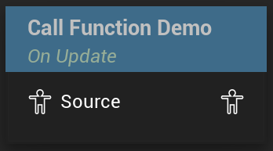

Call Function
Calls a threadsafe function from the node
UAnimGraphNode_CallFunction
FAnimNode_CallFunction

Allows the AnimBP to call a threadsafe function from the animgraph. As of UE5.3 this node is experimental.
The node does not show up in its pure form but always has a function bound to it.
The functions appear as animnodes in formatted like <Function> (From AnimGraph).
The node does not allow changing the bound function after creation.
To make a function show up in the creation menu, it needs to be marked as threadsafe (in Blueprints this can be done in the “advanced” section of the functions details). After compiling the AnimBP once with the threadsafe function, it will show up as described above.
Any inputs for the function will be exposed on the node as well. Outputs are will not show up on the node.
When the function is called is determined by the “Call Site” property on the node.
As of writing this, this node is only documented in one place: Matt Lakes YouTube channel. Link to the video
Note on functions from other sources
The node creation menu will also show functions from other AnimBPs that are marked as threadsafe and allow you to create the corresponding node in your graph. When compiling a graph with a CallFunction node referencing a different AnimBP this will throw an error.
Other AnimBPs functions even appearing is likely a bug though. According to the code comments, the node is just trying to make the current AnimBPs functions as well as function library functions available.
Sadly, the function library part seemingly also does not work. I was not able to get any function to show up from a BlueprintFunctionLibrary created in Blueprints or in C++.